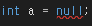

int? a;
Console.WriteLine("{0}", a);이렇게 초기화가 된 변수는 비어있어서 사용을 하지 못합니다.
int형은 null이란 값을 가질 수 없지만 Nullable 형식을 통해 null이란 값을 가질 수 있습니다.
그리고 이 null이란 값을 넣게 되면 결과는
int? a = null;
Console.WriteLine("{0}", a);아무것도 나오지 않습니다.
그렇다면 이걸 어떻게 쓰느냐?
int? a = null;
Console.WriteLine("{0}", a == null);
이런식으로 사용이 가능합니다. null값 인지 아닌지 말이죠.
그리고 당연한 사실이지만 선언된 변수에 다시 int 형이라는 선언은 할 수 없습니다.
그리고 이 변수가 값을 가지고 있는지 않은지를 나타내는 HasValue 라는 기능이 있는데요.
int? a = null;
Console.WriteLine("{0}", a.HasValue);
a = 0;
Console.WriteLine("{0}", a.HasValue);네 그냥 null 인지 아닌지 확인 하는 겁니다.
그냥 초기화 할 때 사용하세요
var a = 1234;
var b = 15.15f;
Console.WriteLine("{0}, {1}", a, b);그리고 사실 실제로 하는일도 같아요
그럼 object랑 var이랑 무슨 차이냐?
object는 박싱과 언박싱의 원리로 힙이 가리키는 값을 사용합니다.
var는 컴파일러가 적합한 데이터 형식을 찾아서 컴파일 합니다.
그리고 var은 지역변수만 사용이 가능합니다.